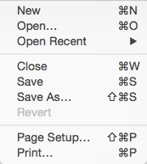

Print the Tidy’d Document
-
To print your Tidy’d source code, Use the Print menu item in the File menu. 
-
Use all of the standard Mac OS X features for your particular printer. You will also have the ability to save as a PDF.
Note: Balthisar Tidy will honor all of your Tidy options, including
settings such as wrap. If you have very long lines and wrap is 0 (meaning no
wrap at all) or is set to a very high value, then Balthisar Tidy will shrink
the output in order to accomodate the page size. This may result in very tiny
text.